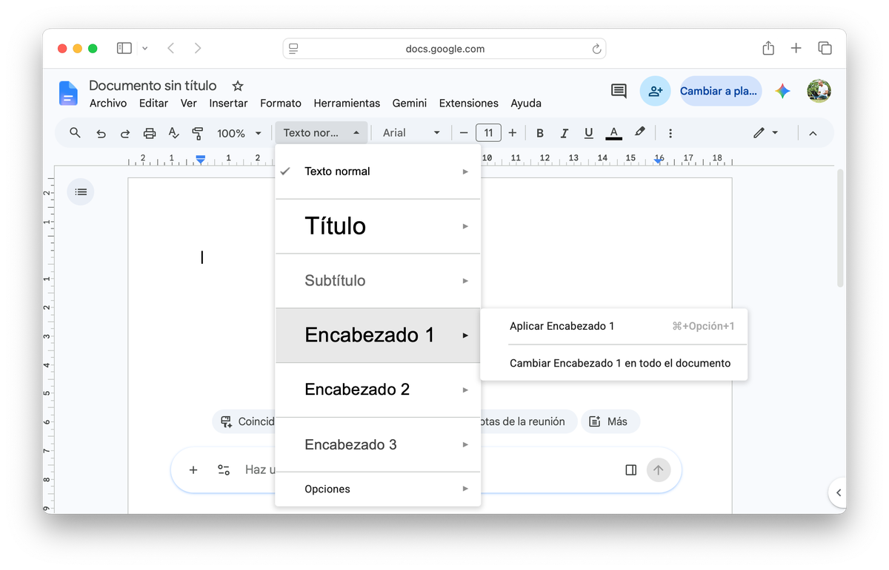
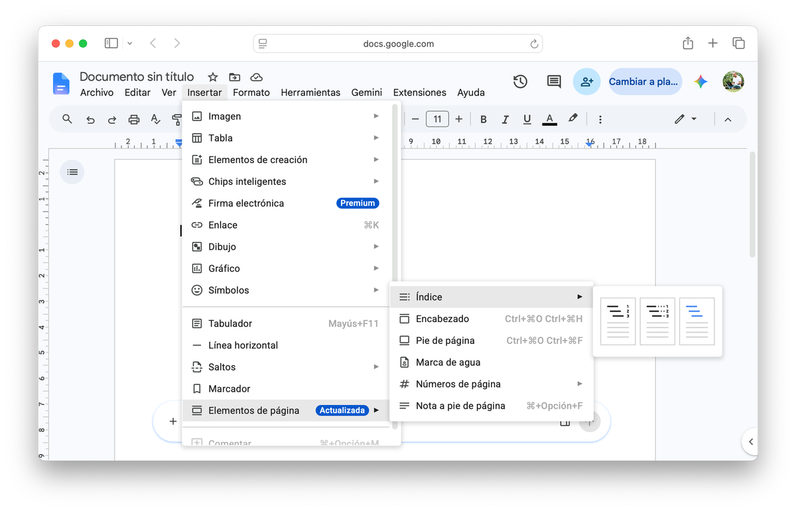
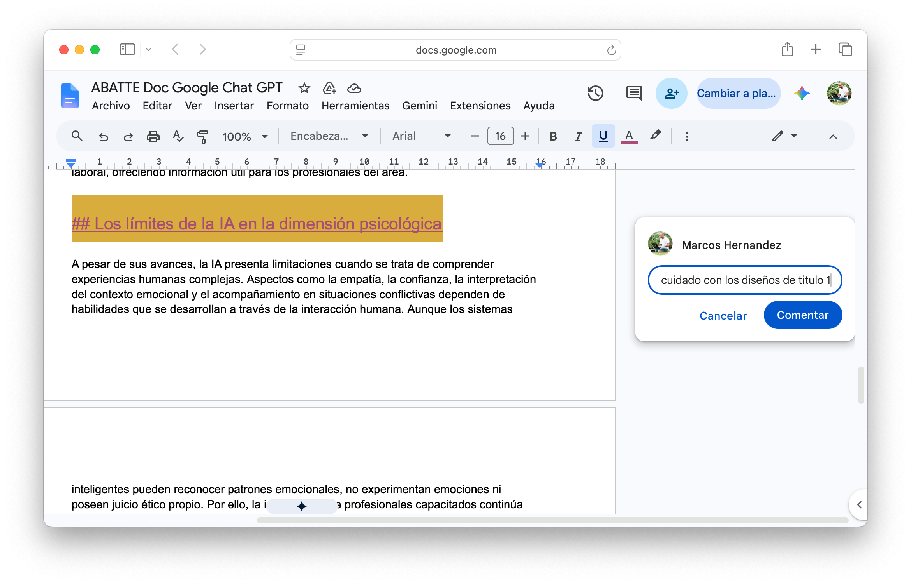

El documento: crear el archivo y conocer Google Docs
Antes de generar contenido, necesitás el espacio donde va a vivir. El primer paso de esta clase no es escribir: es crear el archivo correctamente y entender la herramienta.
Google Docs: la interfaz
Google Docs es el procesador de texto de Google. Funciona en el navegador sin instalar nada y guarda automáticamente en Drive. Para crear un documento nuevo tenés tres caminos:
| Opción | Cómo | Cuándo usarla |
|---|---|---|
| Más rápida | Escribí docs.new en la barra del navegador y presioná Enter. | Cuando querés arrancar sin abrir Drive. |
| Desde Drive | drive.google.com → botón + Nuevo → Documentos de Google. | Cuando ya estás en Drive y querés guardar directamente en una carpeta. |
| Desde Docs | docs.google.com → clic en el cuadro con "+". | Cuando tenés varios docs abiertos y querés crear uno más. |
Elementos clave de la interfaz
| Elemento | Qué hace |
|---|---|
| Nombre del documento | Esquina superior izquierda. Hacé clic para renombrarlo. Obligatorio antes de compartir. |
| Menú de estilos | Desplegable "Texto normal" en la barra de herramientas. Es el centro de esta clase. |
| Panel de navegación | Ver → Mostrar esquema del documento. Muestra la jerarquía de títulos del documento. |
| Autoguardado | Docs guarda cada pocos segundos. Estado en la barra superior: "Guardado en Drive". |
| Botón Compartir | Esquina superior derecha. Define quién puede ver, comentar o editar el documento. |

El desplegable de estilos, en la barra de herramientas: acá elegís Encabezado 1, Encabezado 2 o Texto normal para cada parte del documento.
💡 Idea clave
El autoguardado de Docs no reemplaza la buena nomenclatura. "Documento sin título" guardado en la raíz de Drive es tan difícil de encontrar como un archivo suelto en cualquier escritorio. Nombrá el documento en cuanto lo creás, con el mismo formato de siempre: Nombre del archivo - Versión.
No arrancás de una hoja en blanco: ya tenés un texto generado con IA como punto de partida. En la próxima sección lo ampliás y lo preparás para pegar.
Generar contenido con IA
El texto que armaste con IA en la Clase 01 es corto — una respuesta de prueba, no un documento. Hoy lo ampliás con un LLM, el que prefieras, usando la fórmula RTCFL (Rol, Tarea, Contexto, Formato, Límites): pedile una versión más larga y estructurada sobre el mismo tema, con introducción y subtítulos.
Ejemplos de temas según carrera: gestión de RRHH en PyMEs · turismo sostenible en Argentina · comercio exterior con el MERCOSUR · comunicación institucional en redes · diseño de personajes en medios digitales.
Preparar el archivo y generar el contenido
- Abrí Drive → carpeta "Informática - UNQ" → creá la subcarpeta "Clase 02" (si todavía no existe) → adentro, creá un Google Doc nuevo:
Documento Base - V01. - Activá el panel de navegación: Ver → Mostrar esquema del documento. Está vacío — el documento recién empieza, todavía sin contenido ni estructura. Se los vas a dar más adelante en esta clase.
- Abrí el LLM que prefieras en otra pestaña del navegador.
- Construí el prompt usando RTCFL, sobre el mismo tema de
Texto IA - V01: pedile una versión ampliada, con introducción y tres secciones con subtítulos. - Copiá todo el texto nuevo que te devolvió el LLM.
- Todavía no lo pegues en Docs — primero leé el próximo bloque.
- Verificá al menos una afirmación del texto con CRAAP o una búsqueda en Google Scholar.
⚠️ Atajo obligatorio: Ctrl+Shift+V
Cuando pegás con Ctrl+V, el texto viene con tipografía extraña, colores de fondo y tamaños inconsistentes del LLM. Usá siempre Ctrl+Shift+V (Mac: ⌘+Shift+V) para pegar sin formato — es el método que tenés que memorizar, lo vas a usar todo el año.
 Actualizá tu LinkedIn
Actualizá tu LinkedIn
Generar contenido con un LLM usando un framework de prompting (RTCFL) en vez de tirar una frase suelta es una skill puntual y demostrable: "Prompt engineering aplicado" o "Generación de contenido con IA" en la sección de aptitudes de tu perfil.
Pegar el contenido en tu documento
- Volvé a la pestaña de Docs. El documento se llama
Documento Base - V01y está en la subcarpeta "Clase 02". - Posicioná el cursor al inicio del documento.
- Pegá con
Ctrl+Shift+V(Mac:⌘+Shift+V) — NO con Ctrl+V. El texto aparece sin formato extraño. - Compará: probá deshacer (
Ctrl+Z, Mac:⌘+Z), pegá con Ctrl+V, observá la diferencia. Luego deshacé y usá Ctrl+Shift+V.
Ya tenés el texto limpio en tu documento. Antes de pasar al núcleo de la clase, un primer formato con la barra de herramientas.
Formato de texto: la barra de herramientas
Tu texto ya está pegado, limpio y sin formato ajeno. Antes de estructurarlo con estilos, en la próxima sección, un repaso rápido de la barra de herramientas — los comandos de formato manual que vas a usar todo el año, en cualquier documento.
Negrita, cursiva y color
| Formato | Atajo | Para qué |
|---|---|---|
| Negrita | Ctrl+B (Mac: ⌘+B) | Destacar una palabra o frase puntual dentro de un párrafo. |
| Cursiva | Ctrl+I (Mac: ⌘+I) | Títulos de obras, palabras en otro idioma, un énfasis suave. |
| Subrayado | Ctrl+U (Mac: ⌘+U) | Poco usado en texto académico — Docs lo reserva casi siempre para los links. |
| Fuente y tamaño | — | Desplegables a la izquierda del menú de estilos, en la barra de herramientas. |
| Color de texto | — | Ícono "A" con una barra de color debajo, en la barra de herramientas. |
💡 Idea clave
El formato de carácter (negrita, color, fuente) cambia cómo se ve el texto. Los estilos, que ves en la próxima sección, cambian qué es el texto para el programa. Un título en negrita y tamaño 20 sigue siendo, para Docs, un párrafo cualquiera — no aparece en un índice ni se puede navegar desde el panel lateral. Usá formato de carácter para destacar algo puntual dentro de un párrafo; guardá los estilos para la estructura del documento.
Alineación y espaciado
| Opción | Atajo | Cuándo usarla |
|---|---|---|
| Alinear a la izquierda | Ctrl+Shift+L (Mac: ⌘+Shift+L) | Default de casi todo el cuerpo del texto. |
| Centrar | Ctrl+Shift+E (Mac: ⌘+Shift+E) | Títulos cortos, portadas. |
| Alinear a la derecha | Ctrl+Shift+R (Mac: ⌘+Shift+R) | Firmas, fechas, datos al margen. |
| Justificar | Ctrl+Shift+J (Mac: ⌘+Shift+J) | Cuerpo de texto académico — pareja los dos márgenes, izquierdo y derecho. |
| Sangría de primera línea | — | Formato → Alinear y sangría → Opciones de sangría → Sangría especial → Primera línea. |
| Interlineado y espaciado | — | Ícono de líneas con flechas, en la barra de herramientas. |
Cortar, copiar y pegar
Distinto del pegado sin formato de la sección anterior — ese es para traer texto de otro lado (un LLM, una web). Cortar, copiar y pegar son para reorganizar texto dentro de tu propio documento.
| Comando | Atajo | Qué hace |
|---|---|---|
| Cortar | Ctrl+X (Mac: ⌘+X) | Saca el texto seleccionado del lugar y lo deja listo para pegar en otro. |
| Copiar | Ctrl+C (Mac: ⌘+C) | Duplica el texto seleccionado sin sacarlo de donde está. |
| Pegar | Ctrl+V (Mac: ⌘+V) | Inserta lo cortado o copiado donde esté el cursor — acá sí trae el formato con él, a diferencia de Ctrl+Shift+V, porque es texto de tu propio documento, no de afuera. |
Insertar una imagen
Insertar → Imagen → Subir desde la computadora (o Buscar en la Web, sin salir de Docs). Por ahora alcanza con insertarla simple, en línea con el texto.
Creative Commons: usar contenido de otros sin problemas
Antes de insertar cualquier imagen, hay una pregunta previa: ¿podés usarla? Cuando usás contenido de otra persona —una imagen, un texto, un video, música— tiene un dueño, y usarlo sin permiso puede ser una infracción de derechos de autor. creativecommons.org es un sistema de licencias que te dice, de forma simple, qué podés hacer con esa obra sin pedir permiso caso por caso — no es solo para imágenes, aplica a cualquier contenido con derecho de autor. De hecho, este mismo material que estás leyendo está licenciado bajo CC BY-NC-SA — lo ves al final del documento.
Toda licencia Creative Commons se arma combinando entre una y tres de estas cuatro condiciones — por eso la sigla nunca es arbitraria: dice exactamente qué está permitido.
| Sigla | Nombre | Qué exige o prohíbe |
|---|---|---|
| BY | Reconocimiento (Attribution) | Da crédito al autor original, citá la fuente y enlazá a la licencia. Es la única condición obligatoria — está en las 6 licencias. |
| NC | No Comercial (NonCommercial) | Prohíbe usar la obra con fines de lucro o ventaja comercial, directa o indirecta. |
| ND | Sin Obra Derivada (NoDerivatives) | Permite redistribuir la obra, pero no modificarla, adaptarla ni traducirla. |
| SA | Compartir Igual (ShareAlike) | Permite crear obras derivadas, pero exige distribuir la versión modificada bajo la misma licencia o una equivalente — el mismo concepto de "copyleft" que usa el software libre. |
⚠️ Atención: una combinación que no existe
ND y SA son mutuamente excluyentes — no existe una licencia CC BY-ND-SA. ND prohíbe modificar la obra; SA exige avisar cómo se publica la versión modificada. No se puede pedir las dos cosas a la vez.
Estas son las combinaciones que más vas a encontrar:
| Licencia | Qué permite |
|---|---|
| CC BY | Usar y modificar, citando al autor. |
| CC BY-SA | Usar y modificar, citando al autor, con la misma licencia. |
| CC BY-NC | Usar sin fines comerciales, citando al autor. |
| CC0 / Dominio público | Usar sin restricciones ni obligación de citar. |
💡 Idea clave
En Google Imágenes: Herramientas > Derechos de uso > "Con licencia Creative Commons". Así filtrás desde el buscador.
Formato manual en tu documento
- En
Documento Base - V01, elegí un párrafo del cuerpo del texto y justificalo (Ctrl+Shift+J, Mac:⌘+Shift+J). - Ponéle negrita a un término clave del texto, y cursiva a una palabra en otro idioma o un título de obra, si hay alguno.
- Seleccioná una oración completa, cortala con
Ctrl+Xy pegala en otro lugar del mismo párrafo donde tenga más sentido — comprobá que el formato viajó con ella. - Buscá una imagen relacionada con tu tema, filtrada por licencia Creative Commons (Google Imágenes: Herramientas → Derechos de uso → Con licencia Creative Commons, o en Unsplash). Anotá qué licencia tiene. Insertala en el cuerpo del texto (Insertar → Imagen → Subir o Buscar en la Web).
Ya tenés el formato manual bajo control. Ahora sí, el núcleo de la clase: por qué, para títulos y jerarquía, conviene dejar de lado este formato "a mano" y usar estilos.
La arquitectura del documento: estilos
Ya tenés el texto limpio, y sabés aplicar formato manual con la barra de herramientas. Ahora viene el núcleo de esta clase. Un estilo es una combinación de fuente, tamaño, color y espaciado que se aplica de una vez. No es decoración — es la diferencia entre un documento que parece estructurado y uno que está estructurado.
Cuando formateás un título a mano — negrita, tamaño 18, centrado — el programa ve caracteres con ropa diferente. No sabe que eso es un título. No puede incluirlo en un índice, no puede resumir la sección, no puede ayudarte a navegar el documento.
Cuando aplicás el estilo "Encabezado 1", el programa sabe que ese texto es el encabezado principal. Puede generar el índice automáticamente, puede actualizar el diseño de todos los títulos con un solo clic, puede darle estructura al documento.
💡 Idea clave
Los estilos le dicen al programa qué es cada parte del texto. Sin estilos, el índice automático no puede generarse. Nunca uses un estilo de título solo para que "quede grande" — usá el tamaño de fuente para eso. Los estilos son semánticos, no decorativos.
Los estilos que usás en esta clase
| Estilo | Para qué | Cómo aplicarlo | Atajo |
|---|---|---|---|
| Título del documento | El nombre principal del trabajo. | Desplegable → Título | — |
| Encabezado 1 | Secciones principales. | Seleccioná → desplegable → Encabezado 1 | Ctrl+Alt+1 (Mac: ⌘+Opción+1) |
| Encabezado 2 | Subsecciones. | Seleccioná → desplegable → Encabezado 2 | Ctrl+Alt+2 (Mac: ⌘+Opción+2) |
| Encabezado 3 | Sub-subsecciones (si las necesitás). | Seleccioná → desplegable → Encabezado 3 | Ctrl+Alt+3 (Mac: ⌘+Opción+3) |
| Texto normal | Todo el cuerpo del documento. | Seleccioná → desplegable → Texto normal | Ctrl+Alt+0 (Mac: ⌘+Opción+0) |
⚠️ Error frecuente: numerar por orden, no por nivel
Encabezado 1, 2 y 3 no es un contador que sube con cada título nuevo — es el nivel jerárquico. Un documento con cinco secciones principales tiene cinco títulos en Encabezado 1, no Encabezado 1, 2, 3, 4 y 5 en orden de aparición. El número baja solo cuando el título está un escalón más adentro: cada sección usa Encabezado 1, y sus subsecciones —todas— usan Encabezado 2.
Aplicar estilos a tu documento
📙 Paso a paso — Aplicar estilos
- Seleccioná el texto. Doble clic en una palabra, o clic al inicio y Shift+clic al final. Para una línea entera: triple clic.
- Abrí el menú de estilos: el desplegable "Texto normal" arriba a la izquierda de la barra de herramientas.
- Elegí el estilo que corresponde a esa parte del texto.
Modificar un estilo: que todos los títulos queden iguales
Un estilo no es fijo. Se le puede cambiar la fuente, el tamaño o el color — y ese cambio se aplica a la vez a todos los títulos que usan ese estilo en el documento, no solo al que estás editando. Es la forma correcta de resolver "no me gusta cómo se ve Encabezado 1": nunca formateando cada título a mano, uno por uno.
📙 Paso a paso — Actualizar un estilo
- Formateá a mano un título que ya tenga el estilo aplicado (por ejemplo, cambiale la fuente, el color o el tamaño).
- Con el cursor todavía en ese título, abrí el desplegable de estilos.
- Pasá el mouse sobre el nombre del estilo (ej. "Encabezado 1") — aparece una flecha a la derecha.
- Hacé clic en la flecha y elegí Actualizar "Encabezado 1" para que coincida.
Todos los demás títulos con ese estilo, en todo el documento, cambian a la vez — sin tocarlos uno por uno.
⚠️ Si solo formateás a mano
Cambiar la fuente o el color de un título sin actualizar el estilo deja ese título distinto de los demás — la misma trampa que la "Idea clave" de la sección anterior: formato de carácter no es lo mismo que estilo. Para que todos los títulos del mismo nivel se vean iguales, actualizá siempre el estilo — nunca formatees cada uno por separado.
Con los estilos aplicados vas a tener la jerarquía de títulos definida, y eso te permite generar el índice en menos de un minuto — lo hacés los dos en la próxima sección, uno atrás del otro.
El índice automático
Si los estilos están bien aplicados, generar el índice toma menos de un minuto. Es la consecuencia directa de haber estructurado bien. No hace falta escribirlo ni actualizarlo a mano — el documento lo genera y actualiza solo.
📙 Paso a paso — Insertar el índice
- Posicioná el cursor al inicio del documento, antes del primer título.
Ctrl+Home(Mac:⌘+Flecha arriba) te lleva directo ahí. - Insertá un salto de página: Insertar → Saltos → Salto de página. El índice va en una página aparte, antes del contenido.
- Posicioná el cursor en la página nueva e insertá el índice: Insertar → Elementos de página → Índice.
- Actualizalo cada vez que el documento cambia: clic en el índice → ícono de actualizar. Siempre actualizá antes de entregar.

Insertar → Elementos de página: ahí vive el Índice, junto con Encabezado, Pie de página y Nota a pie de página.
⚠️ Error frecuente: el índice aparece vacío
El índice vacío significa una sola cosa: los estilos no se aplicaron. Volvé a la sección anterior, verificá que cada título tenga el estilo correcto ("Encabezado 1", no negrita + grande), y actualizá.
Aplicar estilos y generar el índice
- Identificá en el texto: ¿cuál es el título del documento? ¿Cuáles son las secciones principales? ¿Cuáles las subsecciones?
- Aplicá Título del documento al nombre del trabajo.
- Aplicá Encabezado 1 a cada sección principal.
- Aplicá Encabezado 2 a cada subsección (si las hay).
- Aplicá Texto normal a todo el cuerpo del texto.
- Elegí un título con Encabezado 1, cambiale la fuente o el color a mano y actualizá el estilo ("Actualizar 'Encabezado 1' para que coincida") para que el cambio se aplique a todos los títulos de ese nivel.
- Verificá en el panel de navegación que la estructura se vea correctamente. Si está vacío, volvé al paso anterior.
- Posicioná el cursor al inicio del documento (
Ctrl+Home, Mac:⌘+Flecha arriba). - Insertar → Saltos → Salto de página.
- Con el cursor en la página nueva: Insertar → Elementos de página → Índice.
- Verificá que el índice tenga al menos 3 entradas con números de página.
- Si está vacío: revisá los pasos anteriores y confirmá que los estilos quedaron bien aplicados.
Actualizá tu LinkedIn
Estructurar un documento con estilos semánticos y generar su índice automático — sin escribirlo a mano — es "Estructuración de documentos profesionales" o "Google Workspace avanzado" en tu perfil. El índice generado es la prueba concreta de la skill.
Tu documento ya tiene estructura e índice propio. Lo último que falta es compartirlo: que otros puedan revisarlo y dejar comentarios.
Comentarios y colaboración
Un documento en Drive es un espacio de trabajo compartido. Los comentarios, Modo Sugerencias e Historial de versiones permiten dialogar y revisar sin modificar directamente el contenido.
| Acción | Cómo |
|---|---|
| Insertar comentario | Seleccioná texto → Ctrl+Alt+M (Mac: ⌘+Opción+M) |
| Responder comentario | Clic en el comentario → "Responder" |
| Resolver comentario | Clic en el comentario → "Resolver" |
| Modo Sugerencias | Ícono de lápiz → "Sugerencias" (arriba a la derecha) |
| Historial de versiones | Archivo → Historial de versiones → Ver historial |

Al seleccionar un fragmento y usar Ctrl+Alt+M, se abre este cuadro: escribís la nota y confirmás con "Comentar".
Comentarios en tu propio documento
- Leé el texto que generaste.
- Buscá al menos 2 lugares que podrías mejorar o que te generan dudas.
- Seleccioná el primer fragmento →
Ctrl+Alt+M(Mac:⌘+Opción+M) → escribí una nota de revisión para vos mismo. - Hacé lo mismo con el segundo fragmento.
- Respondé uno de tus propios comentarios con lo que encontraste o decidiste.
- Resolvé ese comentario haciendo clic en "Resolver".
- Archivo → Historial de versiones → Ver historial. Observá que cada cambio quedó registrado.
Actualizá tu LinkedIn
Manejar comentarios, modo Sugerencias e historial de versiones en un documento compartido es "Colaboración en Google Workspace" — una skill que cualquier equipo remoto o híbrido da por sentada, y que acá quedó registrada en el historial del propio documento.
Formato a mano, con medidas exactas
No se entrega — es para fijar la mecánica de formato manual de "Formato de texto: la barra de herramientas", con medidas exactas en vez de "a ojo". Es el tipo de ejercicio que te puede tocar en un examen sin IA al lado.
- Abrí un documento nuevo de Google Docs (no el
Documento Base - V01) y escribí, de tu puño y letra, dos párrafos cortos sobre cualquier tema que te guste. - Escribí un título arriba de todo. Centralo (
Ctrl+Shift+E, Mac:⌘+Shift+E) y aplicale fuente Arial, tamaño 18 y negrita. - En el cuerpo, marcá una palabra clave en negrita (
Ctrl+B), otra en cursiva (Ctrl+I) y una frase corta en subrayado (Ctrl+U). - Justificá los dos párrafos (
Ctrl+Shift+J, Mac:⌘+Shift+J). - Desde Formato → Alinear y sangría → Opciones de sangría → Sangría especial → Primera línea, aplicale exactamente 1,25 cm a cada párrafo — no lo hagas a ojo con la tecla Tab.
- Al final, escribí tu nombre, aplicale cursiva y alinealo a la derecha (
Ctrl+Shift+R, Mac:⌘+Shift+R). - Guardalo como
Práctica de formato - Clase 02. No hace falta compartirlo ni subirlo a ningún lado.
Ya construiste un documento completo: contenido verificado, estructura con estilos, índice automático e historial de comentarios. Falta cerrarlo.
Resumen de la clase
Al principio de la clase planteamos el objetivo: dejar de armar documentos a mano y construir uno con estructura real.
Actividades
Al final de la clase subís el link de tu Documento Base - V01 en la tarea correspondiente del campus — es tu constancia de entrega de hoy.
📤 Entregable 1
Copiá el link de Documento Base - V01 (clic derecho sobre el archivo en Drive → Compartir → Copiar enlace) y subilo en la tarea correspondiente del campus. No hace falta volver a compartirlo: ya está dentro de la carpeta que compartiste en la Clase 01.
Referencia rápida
"frase" — frase exacta-excluir — excluye un términosite: — dentro de un dominiofiletype: — por tipo de archivo2020..2026 — rango de añosClaude · Copilot
Kimi
docs.new — lienzo en blanco al instanteCtrl+Shift+V (Mac ⌘+Shift+V) — pegar sin formato, nunca directo de afueraCtrl+Alt+M (Mac ⌘+Opción+M) — comentarioCtrl+Z (Mac ⌘+Z) — deshacerCtrl+Alt+1 — Encabezado 1Ctrl+Alt+2 — Encabezado 2Ctrl+Alt+0 — Texto normalGlosario
Redefinir la fuente, el tamaño o el color de un estilo (ej. Encabezado 1) a partir de un título ya formateado a mano. El cambio se aplica a todos los títulos con ese estilo en el documento, no solo al editado — es lo que mantiene todos los títulos del mismo nivel iguales entre sí.
Docs guarda automáticamente cada pocos segundos. El estado se muestra en la barra superior: "Guardado en Drive".
Nota adjunta a un fragmento de texto que no modifica el contenido. Herramienta central de revisión y colaboración.
Combinación predefinida de formato que se aplica de una vez. Sin estilos no hay índice automático ni jerarquía navegable.
Cambios visuales aplicados a mano (negrita, color, fuente) que no le dicen nada al programa sobre qué es ese texto. Distinto de un estilo, que sí es semántico.
Registro automático de todos los cambios. Funciona como red de seguridad y permite nombrar versiones clave.
Lista de títulos y páginas generada por Docs a partir de los estilos. Se actualiza cada vez que cambia el documento.
Modelo de lenguaje grande (Large Language Model): el motor que predice texto detrás de ChatGPT, Gemini, Copilot, Perplexity, DeepSeek, Qwen y Kimi. El modelo en sí no busca ni verifica — pero algunas plataformas le agregan una capa de búsqueda o de fuentes propias por encima, que sí lo hace.
Los cambios quedan pendientes de aprobación. El dueño del documento decide qué acepta.
Panel lateral que muestra la jerarquía de títulos. Si está vacío, los estilos no se aplicaron.
Pega solo el texto, sin el formato de origen. Hábito obligatorio al copiar desde cualquier LLM o página web.
Fuentes
- Google. Cómo agregar un título, un encabezado o un índice en un documento. Ayuda de Editores de Documentos de Google.
support.google.com/docs/answer/116338 - Google. Cómo usar comentarios, elementos de acción y reacciones con emojis. Ayuda de Editores de Documentos de Google.
support.google.com/docs/answer/65129 - Google. Cómo sugerir cambios en Documentos de Google. Ayuda de Editores de Documentos de Google.
support.google.com/docs/answer/6033474 - Google. Ver los cambios de un archivo (Historial de versiones). Ayuda de Editores de Documentos de Google.
support.google.com/docs/answer/190843